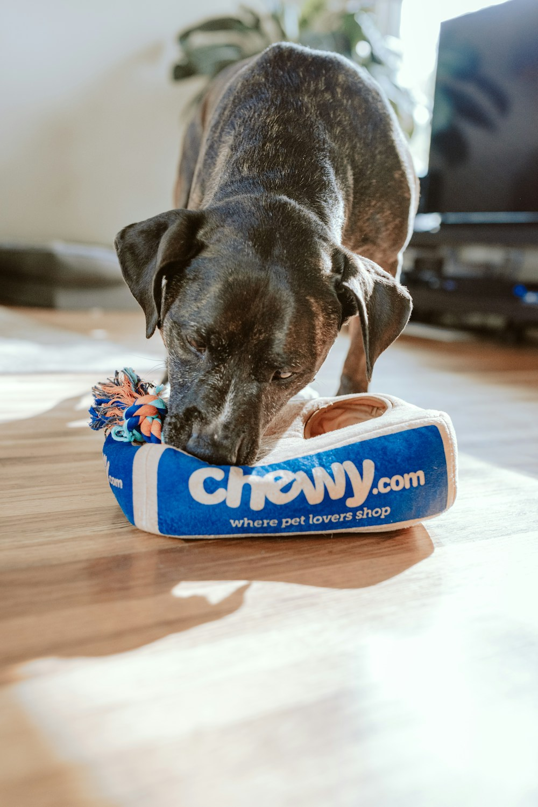

Spokojny spacer: jak nauczyć psa luźnej smyczy?
Ciągnięcie na smyczy to jeden z najczęstszych problemów podczas codziennych wyjść. Poznaj sprawdzone techniki budowania uwagi i spokoju w mieście.
Czytaj dalejPraktyczne poradniki o wychowaniu, zdrowiu, żywieniu i wspólnych aktywnościach z psem – przygotowane we współpracy z behawiorystami i lekarzami weterynarii.
Ciągnięcie na smyczy to jeden z najczęstszych problemów podczas codziennych wyjść. Poznaj sprawdzone techniki budowania uwagi i spokoju w mieście.
Czytaj dalej
Łagodny, cierpliwy i zawsze chętny do zabawy. Sprawdzamy, jakich warunków potrzebuje golden retriever oraz na co zwrócić uwagę przy wyborze hodowli.
Czytaj dalej
Praca nosem wycisza i daje psu ogromną satysfakcję. Podpowiadamy, jak korzystać z mat węchowych i prostych domowych łamigłówek.
Czytaj dalej
Źle dobrane szelki mogą ograniczać ruch łopatek i obciążać kręgosłup. Zobacz, jak prawidłowo zmierzyć psa i wybrać bezpieczny krój.
Czytaj dalejChłodniejsze poranki i wilgoć wymagają odpowiedniego wsparcia organizmu pupila. Omawiamy suplementację, pielęgnację łap i profilaktykę.
Czytaj dalejZbyt łapczywe połykanie posiłków sprzyja problemom trawiennym. Wyjaśniamy, jak dobrać miskę spowalniającą lub matę do lizania.
Czytaj dalej